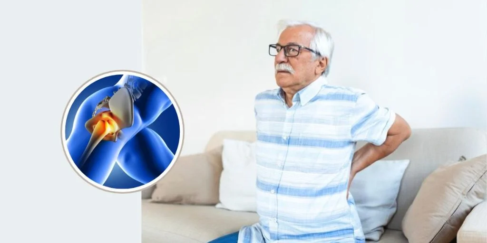

Hip Replacement Healing Time: What to Expect at Every Stage of Recovery
Hip replacement surgery is a procedure used to reduce chronic pain and improve movement. The reasons for this surgery include severe arthritis that does not react to medicine or physical therapy. The procedure may be an option for people experiencing severe pain or restricted motion to improve their quality of life.
The damaged surfaces of the hip joint are removed and replaced with prosthetic parts made from metal, ceramic, or plastic. In addition, such surgery might fix injuries such as fractures or developmental problems affecting the hip.
The recovery process varies among people, depending on their overall health, age, and the surgical method used. Despite these differences, the majority of patients follow a similar path, which involves immediate postoperative care, a slow return to everyday activities, and long-term adjustments. The following article explains the overall healing timeline, what to expect at each stage, and how to achieve an effective recovery.
Hip Replacement Surgery
Hip replacement surgery repairs the damaged portions of the hip joint. Over time, arthritis may destroy the cartilage that protects this joint. When cartilage is destroyed, bones can rub together, causing pain and limited movement.
A hip replacement involves removing the damaged regions and replacing them with prosthetic parts. Surgery is often carried out to treat arthritis, although it can also help with injuries or developmental concerns.
There are several types of hip replacement surgeries:
Total hip replacement
The most common and successful type of hip replacement. A surgeon replaces the ball (femoral head) and socket (acetabulum) of the hip with a prosthetic joint
Partial hip replacement
Also known as hemiarthroplasty, this procedure is rarely performed. A surgeon replaces only the ball of the hip, usually to repair certain hip fractures or tumors
Hip resurfacing
An option for some patients, especially those with large hips. A surgeon resurfaces the hip joint.
Day of Surgery and Immediate Post-Operative Recovery
The procedure lasts about one and a half to two hours, including preparation and anesthesia administration. After surgery, the patient is brought to a recovery room, sometimes known as the Post-Anesthesia Care Unit (PACU). The patient's vital signs are checked, and the pain is managed.
Proper pain management is required during the immediate postoperative period. Patients are given medications to ease discomfort and avoid more issues. Monitoring for early symptoms of infection and other problems is continued. Members of the staff help the patient with initial movements such as sitting up or moving from the bed.
Early Recovery in Hospital
The first days after the surgery are really important to set the ground for further recovery. Even before leaving the hospital, patients should begin to get moving with a little help from the medical staff.
Nurses and physical therapists combine their efforts in the process of introducing the exercises and mobility practices that will help them avoid complications, such as blood clots or muscle stiffness. Patients start learning how to use walking aids such as canes, walkers, or crutches.
Basic measures include sitting out of bed for short periods of time or going for a short walk. Instructions are given for a safe approach in handling simple basic activities and taught ways of reducing pain. Clear communication with the doctors ensures that any concerns are addressed quickly.
Discharge from Hospital and Recovery at Home
Most patients are discharged one to three days after surgery. It depends on their health and ability to perform simple activities. Before discharge, the doctor ensures that the patient learns how to care for the surgical site, manage pain, and use mobility aids. Patients are shown how to do regular tasks safely and avoid actions that can impact the healing process.
Once at home follow the process of recovery as supervised by medical professionals. The patients are given strict medication that helps them overcome the pain and prevent infection. Most of the time in the initial weeks is a combination of rest and slow activity. Some of the earliest forms of rehabilitation are simple, like moving from bed to chair and short walks.
Home exercises can also be practiced to regain muscle strength and flexibilities in the hip. There may be slight swelling and aches in the initial weeks, which are expected but may go away with time.
The patient has to be extra careful and seek medical care immediately if pain, redness, or fever begin to increase at the site. Keeping oneself active within set limits and as the doctor prescribes will ensure complete healing.
Exercise and Physical Therapy
The main element to a successful recovery after a hip replacement is physical therapy. Physical therapists work with the patient to design a personal exercise program to increase strength and mobility over time.
For the first weeks, the main goals of physical therapy are simple activities like walking, sitting, and standing. More advanced exercises are then gradually added in to build up muscle strength and endurance.
They aim at the proper recovery process and at the prevention of stiffness by exercising, most often involving stretching, strengthening surrounding muscles, and balance training.
Consistency in the therapy process accelerates recovery and lowers the risk of long-term complications. Patients should not hesitate to report their levels of pain or changes in improvement so that modifications to the treatment program can be made.
Precautions and Recommendations
It is important to follow certain rules for movements and activities. Patients should never sit with their legs crossed, bend their hips beyond 90 degrees, or lean down to touch their feet or ankles. Avoiding low seats in chairs with armrests will reduce unnecessary pressure on the hips. These are the instructions for protecting a new joint as it heals.
Other precautions include avoiding activities that carry a high risk of falls or sudden impacts, such as jumping or quick turns. Patients should avoid lifting heavy objects until cleared by their doctor. Proper posture and the use of suitable mobility aids can prevent dislocation or damage to the new hip.
Patients can slowly resume their daily activities. Walking gets easier and more steady with daily practice. Most patients can resume driving within two to four weeks, depending on their ability to drive a car safely. Left-sided hip replacements allow for a quicker recovery to driving since they do not impact the dominant leg used for braking.
Returning to work usually takes around six weeks, although this depends on the type of job and your recovery rate. Physically demanding careers may need extra time and adjustments. Resuming sexual activity is normally recommended after six to eight weeks, although patients should speak with their surgeon.
Long-Term Recovery and Life with a New Hip
Recovery after hip replacement does not happen overnight. Although movement returns in a few weeks, full recovery might take months. Patients are advised to follow a healthy lifestyle, including exercise and weight control, in order to extend their life with their new hip.
Long-term healing involves adjusting to the new joint and including it into regular activities. Patients slowly increase their exercise levels, resume hobbies, and regain strength over time. It is important to continue with advised workouts and follow-up consultations even after the initial recovery period. This regular treatment makes sure the implant is safe and functioning properly.
Conclusion
Hip replacement surgery provides relief from severe hip pain and lack of motion. Each step of recovery needs patience, following medical advice, and actively participating in rehabilitation activities. Patients who understand what to expect and take the right steps can speed up their recovery and return to an active, pain-free lifestyle. The recovery from hip replacement is slow, but with the help of specialists and dedication to the treatment, long-term success is possible.
If you are seeking hip replacement surgery, please visit Germanten Hospital or call: 9989635555